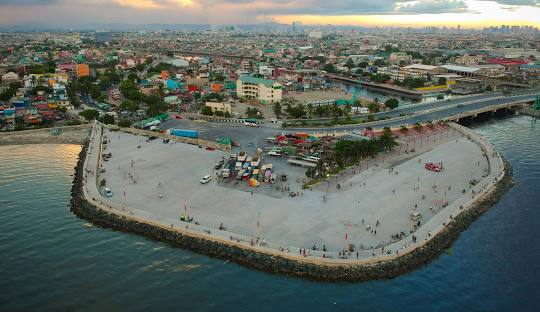

About North Bay Boulivard South
MAIKLING SALAYSAY

Ang NBBS Proper ang orihinal na komunidad na binubuo ng hangganan ng kalyeng North Bay Blvd.
At ng mga kabahayan sa kanluran patungo na sa karagatan. Ang total na sukat nito ay nasa 15
ektarya lamang kasama na ang bagong reklamasyong tinatawag ngayong Fishport.
Samantala, sa pagkakagawa ng Fishport ay lumawak din ang tinaguriang NBBS Proper, Ang tinatawag
na LRT or drainage ng Proper ay napatungan na ng mga kabahayan at nadagdagan pa ng Sitio Sto. Nino
at Sitio Puting Bato kasama na ang komersyal na panig ng Fish port na pawang karagatan pa ng bandang
1960. Kung babalikan ang panahong yun ay kapansin pansin ang malinis na karagatan, at kapag lumusong
ka ay maraming laman dagat ka nang makukuha na sapat upang ipamuhay ng isang pamilya.
Taong 1995, pinangunahan ng mga old tenants ang pag aayos upang magkaroon na ng titulo ang mga lupang
kinatitirikan ng kanilang mga bahay. Natigil ang pag poproseso dito at taong 2000, muling naiproseso
ang pagpapatitulo. Taong 2002, iginawada at nakapaggawad ng 700 na titulo
KALAGAYAN NG PAMAYANAN
Ang Barangay NBBS Proper sa ngayon ay isang progresibong pamayanan. Dumami ang mga establisyemento
at pagkakatatag ng power barges na nakahimpil mismo sa karagatan sa sakop ng Fishport. Sa pagtatagpo
ng R-10, C-3 at pagkakadevelop ng C-4, ang pagpunta sa Fishport ay napadali na at bumilis ang kalakalan
Marami ang nabigyan ng hanapbuhay maging ang karatig na mga barangay ng NBBS Proper.
May mga informal settler din sa loob ng komunidad na matatagpuan sa Sitio Sto. Nino at Sitio Puting Bato.
Sa kasalukuyan ang kanilang lugar ay kinakailangang ng pamahalaan para sa pagpapa-unlad, sila ay mabibiyayaan ng
programang pabahay ng pamahalaan sa Norzagaray.
BISYON
Isang sentro ng idustriyalisasyon sa Lungsod ng Navotas, huwaran, ligtas, masagana at makakalikasan na pamayanan, na pinaninirahan ng disiplinado, may mataas na edukasyon at may takot sa Diyos na mamamayan na pinamumunuan mg mga tapat at maaasahan na nanunungkulan.
MISYON
Tapat at nagkakaisang maglilingkod na may kakayahan sa pagpapa-unlad ng imprastruktura, ekonomiya, kapaligiran at mga programang magsusunog at magbibigay kabuhayan para maiangat ang antas ng pamumuhay ng bawat pamilya at mapaunlad ang lahat ng sector sa Barangay
CORE VALUES
MASAYA, MASAGANA AT MAPAGMAHAL